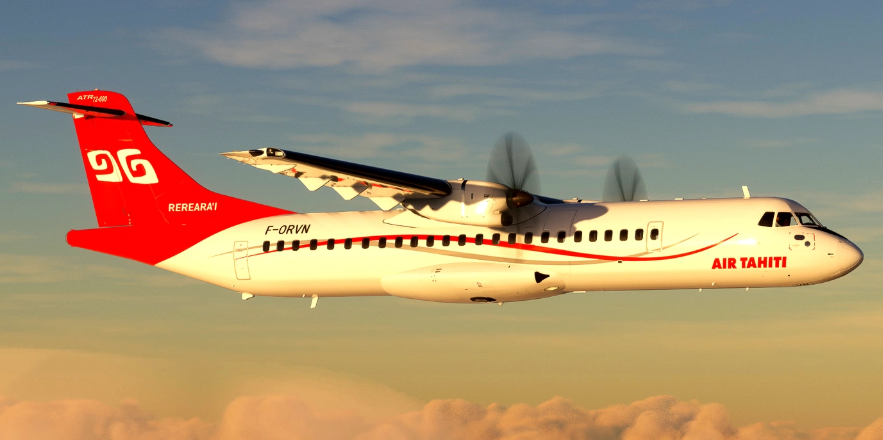

Modelo de las superficies de control de vuelo y luces principales de un ATR-72-600
Resumen
En este informe se presenta el diseño y montaje de un sistema de control de vuelo basado en servomotores y cables para una maqueta a escala 1:33 de un ATR-72, dicho sistema está compuesto de un transmisor que se encarga de enviar los comandos deseados desde un control remoto hasta un receptor, el cual se encuentra en el avión y convierte la señal para que los servos muevan las superficies de control de como se desea. Se realiza un análisis aerodinámico para entender como se comportaría la aeronave al inducir un movimiento con las superficies y por último se concluye la viabilidad del sistema con base en las dificultades y ventajas que presenta este sistema. Adicionalmente se presenta el diseño y montaje de un circuito eléctrico para las luces principales de un avión (haciendo referencia a las luces que llevaría encendidas durante una operación nocturna normal).
Introducción
Para lograr un vuelo seguro y eficiente es fundamental contar con un sistema adecuado para controlar la aeronave, en este caso el ATR 72-600. Esto se consigue mediante los sistemas de control de vuelo, los cuales están conformados por un conjunto de superficies que trabajan juntas para dirigir y estabilizar la aeronave. Estas se dividen en tres grupos: superficies primarias (alerones, elevadores y timón), superficies secundarias (aletas de compensación) y superficies de alta sustentación (flaps y slats).
Existen diversas maneras de construir un sistema para este propósito; la más común en aeronaves antiguas y de pequeño tamaño es el sistema de cables y poleas, debido a la simplicidad de fabricación, bajo peso en comparación con un sistema hidráulico y su funcionamiento independiente de computadoras de vuelo, convirtiéndolo en una opción ideal de un sistema óptimo para aeronaves ligeras con bajos costos operativos.
El sistema de control de vuelo utiliza cables que se conectan mecánicamente a las superficies de control, se dirigen directamente a la cabina y dependen de la fuerza que ejerce el piloto sobre los mandos para mover dichas superficies de control.
El objetivo principal de este proyecto es realizar un sistema de control de vuelo basado en cables y poleas, empleando servomotores SG90 que simularán la acción del piloto desde la cabina, mediante un control remoto Rc, modelo FS-i6X con receptor FS-iA10B de 10 canales que opera a una frecuencia de 2,4 Ghz; el transmisor enviara señales al receptor, el cual se encargará de activar los servomotores conectados a las superficies de control mediante cables y esto se moverán gracias al control Rc, teniendo una buena representación de cómo se montaría un sistema de este tipo en la vida real, por otro lado, también se puede decir que este es un híbrido entre un sistema con actuadores mecánicos y un sistema con cables, en donde hay una central en donde se encuentran los servos y estos mueven a las superficies de control por medio de los cables.
Como objetivo secundario del proyecto se diseñara e implementara un sistema de luces aeronáuticas compuesto por las luces de navegación, beacon y estroboscópicas conectadas a una protoboard de 85mmx55mm que contiene pines energizados, resistencias de 330 Ohms, cables UTP, potenciómetro 100K Ohm, NE555, capacitor de 10 microF, 8 luces led: 3 rojas, 1 verde y 4 blancas; que simulan el comportamiento real de este sistema en una aeronave enfatizando aspectos críticos como la visibilidad, prevenciones y cumplimiento de las normativas aeronáuticas.
Marco Teorico
En esta sección se abordará la importancia de los sistemas de control de vuelo y los sistemas de luces aeronáuticos, con el propósito de contextualizar el desarrollo del modelo funcional basado en el ATR 72-600. Esta aeronave es un avión comercial bimotor turbohélice diseñado para viajes regionales y trayectos de corta duración. Fabricado por Airbus de Francia y Aeritalia de Italia, se dio a conocer el primer ATR 72 en 1985 y realizó su primer vuelo el 27 de octubre de 1988, posteriormente el 2 de octubre de 2006, el CEO de ATR anunció el lanzamiento de la nueva aeronave serie 600 incorporando los últimos avances tecnológicos, mayor eficiencia operativa y fiabilidad considerado uno de los aviones regionales más modernos en el mundo de la aviación.
Fig. 1. Imagen del ATR 72
Sistema de control de vuelo
Es parte esencial de cualquier aeronave y está diseñado para dirigir y gestionar su comportamiento durante el despegue, el vuelo y el aterrizaje. Su función principal es asegurar la estabilidad, la maniobrabilidad y la seguridad evitando situaciones de pérdida o salida de control. Este sistema está compuesto por varios elementos fundamentales, entre ellos: la computadora de control de vuelo, las superficies de control, los sensores y los actuadores.
Computadora de control de vuelo
Este componente utiliza los datos recopilados por los sensores para determinar los comandos necesarios que permitan controlar los enlaces mecánicos por señales electrónicas siendo más precisos y mantener la estabilidad de la aeronave. En los sistemas modernos como el fly-by-wire, la computadora también reemplaza los enlaces mecánicos.
Superficies de control
Son mecanismos móviles ubicados en los extremos de las alas y en el estabilizador horizontal y vertical. Los comandos generados por la computadora de control de vuelo se transmiten a estas superficies permitiendo así el control de los tres ejes de la aeronave: eje longitudinal (alerones), eje lateral (elevadores) y eje vertical (timón de dirección).

Fig. 2. Ilustración del ATR 72 con representación de sus ejes.
Sensores y actuadores
Estos componentes se encuentran distribuidos principalmente en el Air Data System (ADS), el cual está conformado por tomas de presión estática y tomas de presión total, conocidas como tubo pitot, ubicadas a ambos lados del fuselaje, cerca de la nariz del avión. Estas miden la presión atmosférica para calcular la altitud barométrica y la velocidad indicada. El sistema también incluye sensores de temperatura total (TAT) que permiten determinar la velocidad verdadera (TAS) considerando la temperatura y densidad del aire. Todos estos datos son procesados por el Air Data Inertial Reference System (ADIRS) que integra la información del ADS y de los sensores inerciales para ofrecer parámetros precisos a la computadora de control de vuelo.
Sistemas de luces aeronáuticas
Este sistema proporciona iluminación para el exterior e interior de la aeronave. En esta sección se abordarán únicamente las luces exteriores, las cuales son fundamentales para operaciones como el aterrizaje nocturno, rodaje en tierra y la prevención de colisiones en el aire. Este sistema contiene luces de navegación (posición), las luces beacon (anticolisión roja) y las luces estroboscópicas (anticolisión blanca).

Fig. 3. Ilustración del ATR con representación de sus luces.
(1) Luces de navegación (posición)
Estas luces indican la orientación y dirección de la aeronave. Son esenciales para que otras aeronaves puedan identificar su ubicación y sentido de desplazamiento, a su vez alertando a otras aeronaves cumpliendo con los requisitos mínimos de las regulaciones internacionales de aviación.
Se ubican de la siguiente manera:
Luz roja: En el extremo del ala izquierda
Luz verde: En el extremo del ala derecha
Luz blanca: En el cono de la cola
(2) Luces beacon (Anticolisión roja)
Son luces de color rojo intermitente que se activan para evitar colisiones y alertar la tripulacion y al personal de tierra de que la aeronave esta activa o en movimiento. Están ubicadas en la parte superior e inferior de la aeronave deben permanecer encendidas desde el momento en que se activan los sistemas eléctricos o motores hasta su apagado total.
(3) Luces estroboscópicas (Anticolisión blanca)
Son luces blancas que emiten destellos intermitentes de alta intensidad para aumentar la visibilidad de una aeronave en caso de neblina, sirve para disuadir aves en la trayectoria de vuelo evitando incidentes con fauna, se encuentran en los extremos de las alas y en la cola de la aeronave.
Datos de Relevancia en el Funcionamiento y Operación del Sistema de Control de Vuelo en un ATR 72-600
Control de Alabeo (ROLL)
El control de alabeo se realiza mediante ruedas de control en la cabina (control wheels), con un recorrido angular de ±87°.
Los alerones tienen un recorrido máximo de 14° hacia arriba y 14° hacia abajo.
Mecanismo
El sistema opera de forma mecánica mediante conexión directa entre las ruedas de control y los alerones.
Spring Tab
Un spring tab proporciona asistencia mecánica proporcional a la carga aerodinámica aplicada. La deflexión del spring tab del alerón izquierdo puede variar ±6,7°, controlada eléctricamente desde interruptores ubicados en ambas ruedas. El tiempo total de recorrido es de aproximadamente 30 segundos.
Control de Cabeceo (PITCH)
El control de cabeceo se realiza mediante elevadores montados en el estabilizador horizontal. Cada columna de mando controla su respectivo elevador y está conectada mecánicamente con la columna opuesta mediante un sistema de acoplamiento.
Deflexión de Elevadores y Columna de Mando
- Elevadores: 23° hacia arriba y 13° hacia abajo.
- Columna de mando: 11,25° hacia atrás y 6,75° hacia adelante.
Trim de Cabeceo
El trimado se realiza modificando la posición neutra de los trim tabs de ambos elevadores:
- Movimiento del trim tab: 5° hacia arriba, 1,5° hacia abajo.
- Activación desde interruptores en las ruedas y en modo STBY desde el pedestal.
- Tiempo total de recorrido: 30 segundos.
Protección de Pérdida (Stall)
El avión está equipado con:
- Stick Shaker: vibra la columna cuando se alcanza un ángulo de ataque crítico.
- Stick Pusher: empuja la columna automáticamente si el ángulo de ataque aumenta (solo en canal del capitán).
En caso de bloqueo del sistema de cabeceo, es posible desacoplar las columnas aplicando una fuerza diferencial de 52 daN.
Control de Guiñada (YAW)
Se realiza mediante pedales que accionan el timón de dirección (rudder). Se asume un rango de deflexión de ±25°–30°.
El timón tiene capacidad de trim, activado por interruptores eléctricos. Ambos deben mantenerse en la misma dirección para activarlo.
Detalles Operativos Relevantes
- El trim normal y el STBY no deben usarse al mismo tiempo.
- Si ocurre desincronización de trim tabs, el sistema CCAS genera una alerta (Pitch Trim Asym).
- Si se activa el trim eléctrico, el AP se desconecta.
- Un indicador de posición muestra la deflexión del actuador derecho (sector verde: 0° a 2,5° hacia arriba, recomendado para despegue).
Procedimiento
Para el desarrollo del sistema de control de vuelo por cable y el sistema de iluminacion se elaboró una estructura a escala 1:33 del ATR 72-600. Se utilizaron materiales como plastico de botella, periodico , porcelanicron, cartón, palos bajalenguas, palos de pincho y componentes mecatrónicos para garantizar la facilidad del montaje. Se conectaron tres servomotores al receptor del control inalámbrico realizando, pruebas funcionales del movimiento de cada superficie, para el sistema de iluminación se elaboró un circuito considerando la ubicación y función de cada tipo de luz.
El proyecto se divide en dos sistemas, el sistema de control y el sistema de luces que se utilizan en la fase de crucero, cada uno de estos sistemas pueden ser analizados de manera separada.
Etapas del proyecto
- Construcción del modelo a escala
- Identificación de las superficies de control

Fig. 4. Vista superior del sistema de control
Como se puede ver en la figura 4, el sistema está compuesto por 3 servos, cada uno unido a una superficie que controla uno de los ejes de giro de la aeronave (alabeo, cabeceo y guiñada). Para facilitar la explicación del sistema, se dividirá en tres subsistemas, como se muestra en la figura 1. El \textbf{Roll servo} está conectado a dos superficies de control (ambos alerones) se realizó el montaje de esta manera para que la sincronización del movimiento de ambos sea óptima esto al requerir solo un servo para mover ambos alerones. El \textbf{Picth servo} está conectado a uno de los elevadores, el cual está pegado sobre el mismo eje que el otro haciendo que todo funcione como una sola superficie, lo que facilita mucho que ambos tengan el mismo ángulo de deflexión al mismo tiempo. El timón de cola se controla mediante el \textbf{Yaw servo}, el cual tiene atado dos cables que se conectan a cada lado del timón, de modo que cuando se requiere un movimiento de guiñada hacia la derecha, se "tira" del cable derecho para que el timón se mueva hacia la derecha, como se muestra en la figura 2.

Fig. 5. Servo de guiñada y timón en funcionamiento.
Dado que el sistema está montado en el modelo de un ATR-72 y este avión tiene cola en T, esto complica el montaje del mecanismo necesario para mover los elevadores porque lo que se optó por instalar el servo directamente sobre el estabilizador horizontal, esto facilitando la construcción del modelo y ahorrando la necesidad de instalar un sistema más complejo que mueva los elevadores.

Fig. 6. Montaje de los cables del ascensor.
En el caso de los alerones, se requiere que uno de los alerones suba al tiempo que el otro baja, esto con el fin de generar una descompensación de ambas a las. Para lograr este movimiento se conectó un alambre con forma de L a cada alerón y a cada brazo del roll servo de manera que al “empujar” de uno de los lados y “tirar” del otro se genera el movimiento deseado.
Para inducir un alabeo hacia la izquierda se deja el sistema como se muestra en la figura …, esto hace que el alerón izquierdo suba haciendo que el ala izquierda pierda sustentación y que el aleron derecho baje, haciendo que el ala derecha gane sustentación, generando un momento respecto al centro de gravedad del avión.

Fig. 7. Montaje del servo de balanceo.

Fig. 8. Alerón izquierdo mientras gira hacia la izquierda.
Diseño del circuito eléctrico

Fig. 9. Diagrama del circuito eléctrico encargado de las luces del modelo.
Para el circuito de luces de navegación y luces anticolisión se utilizaron un total de 8 LEDs, de los cuales 5 tienen un brillo fijo y 3 son de brillo intermitente. Para lograr esto se montó el circuito que se muestra a continuación.
Este circuito puede ser dividido en dos partes. La primera está compuesta por 5 LEDs conectados en paralelo, cada uno con una resistencia de \(330 \, \Omega\). La segunda parte está compuesta por 3 LEDs conectados en serie, un circuito integrado 555 que controla los pulsos de encendido y un potenciómetro que ajusta la velocidad de titilación. Todo el sistema es alimentado por una batería de 9 V.
Para conocer los valores de corriente que circulan a través del circuito, se determina la resistencia total dividiendo el sistema en dos secciones: \(RT_1\) y \(RT_2\).
(Cálculo de \(RT_1\))
Como los 5 LEDs están en paralelo con resistencias iguales \(R\): \[ \frac{1}{RT_1} = \frac{1}{R} + \frac{1}{R} + \frac{1}{R} + \frac{1}{R} + \frac{1}{R} = \frac{5}{R} \] \[ RT_1 = \frac{R}{5} = \frac{330\, \Omega}{5} = 66\, \Omega \]
Cálculo de \(RT_2\)
Para la segunda parte del circuito, se considera: \[ \frac{1}{RT_2} = \frac{1}{3R} + \frac{1}{2R} \] \[ \frac{1}{RT_2} = \frac{2 + 3}{6R} = \frac{5}{6R} \quad \Rightarrow \quad RT_2 = \frac{6R}{5} = \frac{6 \cdot 330\, \Omega}{5} = 396\, \Omega \]
Resistencia total \(RT\)
Al estar \(RT_1\) y \(RT_2\) en paralelo: \[ \frac{1}{RT} = \frac{1}{RT_1} + \frac{1}{RT_2} = \frac{RT_1 + RT_2}{RT_1 \cdot RT_2} \quad \Rightarrow \quad RT = \frac{RT_1 \cdot RT_2}{RT_1 + RT_2} \] \[ RT = \frac{66 \cdot 396}{66 + 396} = \frac{26136}{462} \approx 56.57\, \Omega \]
Cálculo de la corriente total
Utilizando la ley de Ohm: \[ I_T = \frac{V}{RT} = \frac{9\,V}{56.57\,\Omega} \approx 0.15\,A \]
Analisis aerodinámico
El análisis aerodinámico realizado sobre un modelo a escala del avión ATR 72 utilizando el software XFLR5. Este análisis tiene como objetivo evaluar el comportamiento del flujo de aire alrededor de la aeronave, así como determinar sus coeficientes aerodinámicos clave, distribuciones de presión, y eficiencia general en vuelo estacionario.
El modelo utilizado en el análisis ha sido dimensionado para un entorno de simulación, con condiciones específicas que incluyen un ángulo de ataque de 6° y una velocidad del flujo de entrada (V de 16.0 m/s). Se han aplicado condiciones ideales de flujo incompresible e invíscido para establecer una línea base de comparación.
A continuación, se presenta la información detallada del modelo, los resultados obtenidos en términos de coeficientes aerodinámicos, visualización del flujo sobre la aeronave, y un conjunto de gráficas que describen el comportamiento de sustentación, resistencia y momento con respecto al ángulo de ataque. Finalmente, se incluyen observaciones técnicas y recomendaciones para optimizar el diseño del modelo en función de los resultados obtenidos.
Tabla 1. Parámetros del Modelo


| Parámetro | Valor |
|---|---|
| Nombre del modelo | ATR 72-600 |
| Velocidad del viento (V∞) | 16.0 m/s |
| Ángulo de ataque (α) | 6.0° |
| Masa total | 2.0 kg |
| Envergadura del ala | 0.19 m |
| Longitud total del avión | 0.48 m |
| Longitud del elevador horizontal | 0.15 m |
| Longitud del rudder | 0.08 m |
| Área alar estimada | 0.0152 m² |
| Cuerda media aerodinámica (MAC) | 0.008 m |
| Centro aerodinámico (XCP) | 0.020 m |
| Centro de presiones (ZCP) | -0.024 m |
| Centro de presión neutro (XNP) | 0.0025 m |
| Centro de gravedad (XCG) | 0.000 m |
| Sweep en raíz | 5.262° |
| Elementos de malla | 809 |
Tabla 2. Valores de Coeficientes Aerodinámicos para -6°

| Parámetro | Valor |
|---|---|
| CL | -1.21329 |
| CD | 0.09302 |
| CL/CD | -13.044 |
| Cm | 2.97596 |
| Ch/Cl | -0.04555 |
| Cn | 0.02724 |
| Eficiencia Oswald (e) | 0.614 |
Tabla 3. Valores de Coeficientes Aerodinámicos para 0°
<
| Parámetro | Valor |
|---|---|
| CL | -0.76019 |
| CD | 0.03801 |
| CL/CD | -20.000 |
| Cm | 1.9311 |
| Ch/Cl | -0.03643 |
| Cn | 0.02331 |
| Eficiencia Oswald (e) | 0.590 |
Tabla 4. Valores de Coeficientes Aerodinámicos para 6°

| Parámetro | Valor |
|---|---|
| CL | -0.29005 |
| CD | 0.00771 |
| CL/CD | -37.605 |
| Cm | 0.825 |
| Ch | 0.000 |
| Cn | 0.1896 |
| Eficiencia Oswald (e) | 0.423 |
Tabla 5. Visualización del Flujo para 6°


| Observación | Detalle |
|---|---|
| Tipo de flujo | Ordenado y simétrico alrededor del avión |
| Cp | Distribución adecuada, mayor (negativo) en el extradós |
| Interacción | Downwash evidente entre el ala y el estabilizador horizontal |
Analisis De Las Graficas

Tabla 6. CL vs CD
| Relación típica entre sustentación y resistencia. |
| A mayor CL, también aumenta el CD. |
| Curva suavemente creciente: buena eficiencia aerodinámica. |
| Buena sustentación con baja resistencia. |
Tabla 7. CL vs Ángulo de Ataque α
| Relación lineal clara entre CL y α. |
| No hay pérdida hasta al menos α = 12°. |
| Buen comportamiento para vuelo estable. |
| Fórmula: CL = CL₀ + dCL/dα (α - α₀) |
Tabla 8. Cm vs Ángulo de Ataque α
| Pendiente negativa de Cm: estabilidad longitudinal. |
| Donde Cm = 0: equilibrio estático. |
| Buen posicionamiento del centro de gravedad. |
Tabla 9. CL/CD vs Ángulo de Ataque α
| Indica eficiencia aerodinámica. |
| Pico máximo en α ≈ 4°–6°. |
| Después del pico, disminuye por aumento de CD. |
| Valores negativos para α < 0° pueden ser errores o inestabilidad. |
A continuación se presentan los cálculos aerodinámicos para el modelo simulado en el programa XFLR5 para el ATR 72-600.
Parámetros del modelo considerados para los cálculos:
- Velocidad del viento: V = 16,0 m/s
- Densidad del aire: ρ = 1,225 kg/m3
- Área alar: S = 0,0152 m2
- Cuerda media aerodinámica: c = 0,008 m
- Viscosidad dinámica del aire: μ = 1.87 × 10-5 Pa·s
Cálculo del número de Reynolds
Fórmula:
Re = (ρ · V · c) / μ (1)
Re = (1.225 kg/m3) · (16 m/s) · (0.008 m) / (1.87 × 10-5 Pa·s) = 8,371
Número de Reynolds utilizado: 8,371
Fórmulas utilizadas
-
Sustentación:
L = ½ ρ V2 S CL (2) -
Resistencia:
D = ½ ρ V2 S CD (3) -
Momento aerodinámico:
M = ½ ρ V2 S Cm (4)
Cálculos por Ángulo de Ataque
L = ½ · (1.225) · (16)2 · (0.0152) · (−1.21329) = −2.8917 N
L = ½ · (1.225) · (16)2 · (0.0152) · (−0.76019) = −1.811 N
L = ½ · (1.225) · (16)2 · (0.0152) · (−0.29005) = −0.6912 N
Para α = −6°
D = ½ · (1.225) · (16)2 · (0.0152) · (0.09302) = 0.2217 N
M = ½ · (1.225) · (16)2 · (0.0152) · (2.97596) = 7.0927 N·m
Para α = 0°
D = ½ · (1.225) · (16)2 · (0.0152) · (0.03801) = 0.0905 N
M = ½ · (1.225) · (16)2 · (0.0152) · (1.9311) = 4.6025 N·m
Para α = 6°
D = ½ · (1.225) · (16)2 · (0.0152) · (0.00771) = 0.01837 N
M = ½ · (1.225) · (16)2 · (0.0152) · (0.825) = 1.9662 N·m
Con estos parámetros se puede representar una simulación, como se muestra en las figuras 16 y 17, a continuación.


Funcionamiento y Análisis del Control
1. Componentes del Sistema
Servo SG90 – 9g (Micro Servo)
| Especificación | Valor |
|---|---|
| Voltaje de operación | 4.8 V – 6.0 V |
| Torque nominal (@ 4.8 V) | 1.8 kg·cm |
| Velocidad (@ 4.8 V) | 0.12 s / 60° |
| Ángulo de giro | 0°–180° (PWM) |
| Peso | 9 g |
Conversión: 1.8 kg·cm = 0.1766 N·m
Sistema RC – FlySky FS-i6X con receptor FS-iA10B
- Tipo: Transmisor RC digital 2.4 GHz, 10 canales (AFHDS 2A)
- Resolución PWM: 1000 μs a 2000 μs
2. Superficies de Control en el Modelo
- Alerones: 3 cm × 8 cm → A = 0.0024 m², r = 0.015 m
- Elevadores: 3 cm × 8 cm → r = 0.015 m
- Rudder: 3 cm × 10 cm → A = 0.0030 m², r = 0.015 m
3. Cálculo de Torque Requerido
Fórmulas:
F = 0.5 · ρ · V² · A · CL(δ)
τ = F · rDatos: ρ = 1.225 kg/m³, V = 16 m/s, CL(δ) ≈ 0.1 · δ
- Alerones: τ = 0.00564 N·m
- Elevadores: τ = 0.00564 N·m
- Rudder: τ = 0.00705 N·m
4. Comparación con el Torque Disponible (Servo SG90)
| Superficie | Torque Requerido | Torque Disponible | Margen |
|---|---|---|---|
| Alerón | 0.00564 | 0.1766 | ∼ 31× |
| Elevador | 0.00564 | 0.1766 | ∼ 31× |
| Rudder | 0.00705 | 0.1766 | ∼ 25× |
5. Funcionamiento del Sistema RC y Cableado de Servos
Flujo del sistema: Transmisor FS-i6X → Receptor FS-iA10B → Servos SG90
- Transmisor genera señales digitales proporcionales al movimiento
- Receptor convierte las señales en pulsos PWM (1000–2000 μs)
Cableado de los servos:
- Marrón/Negro: -V, GND
- Rojo: +V (4.8V–6V)
- Amarillo/Naranja: Señal (PWM)
Esquema de conexión al receptor:

Fig. 18. Esquema De Coneccion De Servos Al Receptor.
- Canal 2: Alerón derecho
- Canal 1: Elevador
- Canal 5: Rudder
- Canal 6: Alerón izquierdo (opcional)
Alimentación: batería de litio de 3.7V a 2000mA (se recomienda usar BEC de 5V).
El sistema compuesto por el transmisor FS-i6X, el receptor FS-iA10B y los servos SG90 de 9g son técnicamente adecuados para controlar de forma precisa y segura las superficies móviles del modelo a escala del ATR 72-600. El torque disponible excede por amplio margen el requerido incluso en condiciones aerodinámicas exigentes, asegurando buena respuesta y estabilidad.

Fig. 19. Esquema Del Control FlySky.

Fig. 20. Esquema Completo Del Receptor.
Discusión de Resultados
1. El desarrollo del modelo a escala 1:33 del ATR 72-600 permitió evaluar la efectividad de un sistema de control de vuelo basado en cables y servomotores SG90, frente a las especificaciones y condiciones de operación del ATR real. Aunque el modelo no replica completamente la complejidad del sistema fly-by-wire ni los mecanismos asistidos por spring tabs del avión real (soportes adicionales en las superficies de control para facilitar el vuelo), se logró una representación funcional con resultados aerodinámicos coherentes para condiciones simuladas.
2. Desde el punto de vista aerodinámico, los coeficientes de sustentación o lift (CL), resistencia o drag (CD) y momento (Cm) del modelo simulado mostraron tendencias similares a las observadas en perfiles aerodinámicos reales. Por ejemplo, para un ángulo de ataque de 6°, el modelo alcanzó un CL de -0.29 y un CD de 0.00771, lo que indica un flujo aerodinámico limpio y bajo arrastre, aunque el valor negativo de CL sugiere una configuración invertida o problemas de orientación en la simulación. En contraste, el ATR 72-600 real opera con CL positivos en rangos de 0.5–1.2 durante vuelo nivelado, y presenta una eficiencia CL/CD inferior en configuraciones de alta carga. Sin embargo, la eficiencia máxima del modelo fue de -37.6, un valor no físico que posiblemente se deba a errores de mallado o simplificaciones del software XFLR5.
3. Respecto a los actuadores, los cálculos indicaron que los servos SG90 tienen un margen de torque entre 25 y 31 veces superior al requerido para mover las superficies del modelo. Este margen es significativo y garantiza una operación sin riesgo de sobrecarga mecánica. En el ATR real, las superficies están asistidas por spring tabs y sistemas mecánicos complejos, lo que permite controlar cargas aerodinámicas reales mucho mayores con una fuerza humana limitada. En el modelo, esa relación se simula eficazmente con servos, aunque el sistema no incorpora retroalimentación de carga ni mecanismos de desacoplamiento como los presentes en el ATR.
4. Finalmente, el control de vuelo mediante radiofrecuencia y señales PWM replicó adecuadamente el comportamiento esperado, con movimientos precisos y sincronizados. Aunque no se alcanzan los grados máximos de deflexión del ATR (por ejemplo, ±14° en alerones o ±23° en elevadores),a causa de las limitaciones en el giro de los servomotores que se están implementando en la construcción de este modelo, esto, sumado con la unión de los cables a las superficies de control considerando que pueda existir diferencias de tensión entre un extremo del servomotor y el otro provocan dicho cambio en la deflexión, aun así, se mantiene una respuesta proporcional suficiente para verificar la lógica del sistema de control.
5. En resumen, el modelo escala cumple su objetivo educativo al simular con fidelidad razonable el comportamiento básico de un sistema de control por cables. Si bien las limitaciones de escala, materiales y software influyen en la precisión de los resultados, la comparación con los parámetros reales del ATR 72-600 demuestra que las decisiones de diseño fueron acertadas y funcionales para un desempeño favorable en la recolección de datos y óptima en cuanto a relación costo beneficio para este modelo.
Conclusión
Los sistemas de control de vuelo son cruciales para el control del vuelo. Estos son sistemas complejos que se componen de múltiples partes las cuales deben trabajar en armonía permitiendo que se logré un vuelo controlado, esto se logra por medio de múltiples sistemas tanto mecánicos como eléctricos (dependiendo de la aeronave). La construcción de un sistema de control permite entender el funcionamiento de estos, dando a conocer que se extiende no solo a la parte mecánica.
Durante la fabricación de un sistema de control de vuelo a base de cables, es decir, donde la superficie de control no es movida directamente por un servo, sino, por un sistema intermediario puede traer dificultades, tales como, mayor espacio requerido para poder instalar el sistema de cables, provocando que sea más complejo acomodar otros sistemas dentro de la aeronave.
Adicionalmente se encontraron problemas como la alta fricción en ciertos puntos, lo que impedía el correcto movimiento de las superficies de control, pues, debido a esto los servos no tenían la fuerza suficiente para mover la superficie. En ocasiones es mejor colocar un servo que se encargue de mover cada alerón en vez de uno solo que muevan los dos alerones, si bien el montar un solo servo para mover ambas superficies permite colocarlo dentro del fuselaje reduciendo el arrastre misceláneo y reducir peso, esta mejora no es significativa, pues, si se tiene en cuenta el peso de estos (9g) termina siendo igual de pesado colocar el sistema de transmisión de movimiento, además que si se tiene en cuenta el tamaño y lo que sobre sale del servo si este se coloca en el ala el arrastre misceláneo es muy pequeño, resultando en que colar un único servo solo sea viable al momento de hacer modelos muy grandes y trabajar con actuadores mucho más potentes y pesados.
Otro problema que se puede presentar es que al utilizar cables flexibles como el nailon es necesario asegurarse que este quede del todo tensado, pues, si este no se encuentra tensado correctamente puede llegar a hacer que el movimiento de la superficie de control no sea el esperado, es decir, que esta se mueva menos de lo esperado. El sistema de luces es de gran importancia para todas las personas involucradas en un vuelo, pues, este hace que la aeronave sea más visible lo que evita accidentes, este sistema tiene un gran consumo energético lo que puede llevar a problemas para poder alimentarlo de manera eficiente. En el caso de las luces estroboscópicas se encontraron problemas para que estas brillen con la intensidad que deberían, resultando en un rendimiento por debajo de lo esperado, esto se debe a que estás están conectadas en serie además de compartir fuente de alimentación con las luces de navegación. Para solucionar este problema se podrían conectar en paralelo y utilizar una fuente que alimente únicamente a las 3 luces.